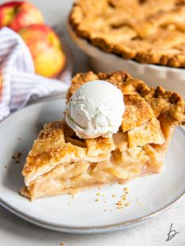

A family favorite. The very best apple pie you have ever tasted, with a buttery, flaky, homemade, rolling pie crust, and a filling with a mix of different types of tasty apples, spices, vanilla and a splash of brandy.
It´s best to use a mix of different types of apples in your pie. Some apple varieties cook up faster than others. Some cook up firm, smoe more soft; some apples are more tart, some more sweet.
By commbining them, you´ll get a more complex, deeper flavor. Look for a combination of tart and sweet apples, and a combination of apples that cook up firm and soft. That said, some apples are better for cooking into a pie than others. Try these:
Avoid Red Delicious apples for pies, they don´t cook well.
The most forgiving pie crust is one that is made with a mixture of butter and shortening. That way you get the flavor of the butter, with the easy flakiness that comes from using shortening.
Some people use all vegetable oil, and some swear by lard. A favorite one is made with sour-cream as the fat, along with butter. No need for a food processor; the dough is easy to roll-out, and the crust is wonderfully flaky.
Pour flour, sugar, and salt into the bowl of a food processor and pulse a couple of times to mix.